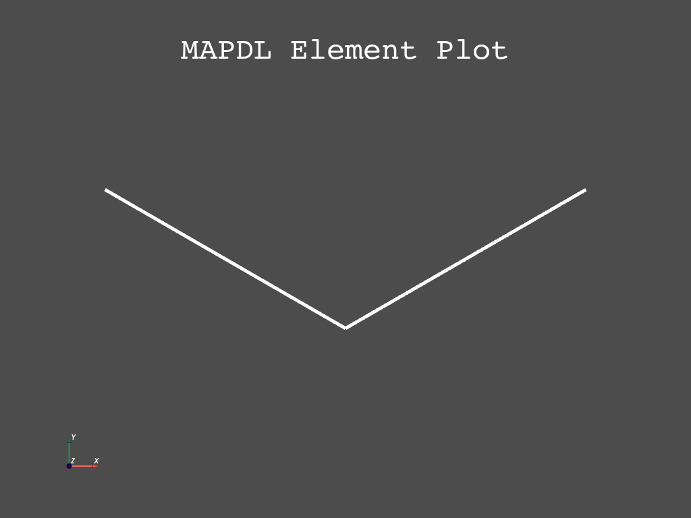

Note
Click here to download the full example code
Deflection of a Hinged Support#
- Problem Description:
A structure consisting of two equal steel bars, each of length \(l\) and cross-sectional area \(A\), with hinged ends is subjected to the action of a load \(F\). Determine the stress, \(\sigma\), in the bars and the deflection, \(\delta\), of point 2. Neglect the weight of the bars as a small quantity in comparison with the load \(F\).
- Reference:
S. Timoshenko, Strength of Materials, Part I, Elementary Theory and Problems, 3rd Edition, D. Van Nostrand Co., Inc., New York, NY, 1955, pg. 10, problem 2.
- Analysis Type(s):
Static Analysis
ANTYPE=0
- Element Type(s):
3-D Spar (or Truss) Elements (LINK180)
{kind=link}
- Material Properties
\(E = 30 \cdot 10^6 psi\)
- Geometric Properties:
\(l = 15 ft\)
\(A = 0.5 in^2\)
\(\Theta = 30 ^\circ\)
- Loading:
\(F = 5000 lb\)
- Analytical Equations:
The tensile force in the bars is \(S\) - \(S = \frac{P}{2 sin \Theta}\)
The necessary cross-sectional area \(A\) is - \(A = \frac{S}{\sigma}\)
The elongation of the bar \(AB\) is - \(B_1 D = \frac{\sigma l}{E}\)
The deflection \(BB_1\) is - \(BB_1 = \frac{B_1 D}{sin \Theta}\)
- Notes:
Consistent length units are used. The dimensions \(a\) and \(b\) are calculated parametrically in the input as follows: - \(a = 2 l cos \Theta\), - \(b = l sin \Theta\).
# sphinx_gallery_thumbnail_path = '_static/vm4_setup.png'
Start MAPDL#
Out:
'*****ANSYS VERIFICATION RUN ONLY*****\n DO NOT USE RESULTS FOR PRODUCTION\n\n ***** ANSYS ANALYSIS DEFINITION (PREP7) *****'
Define Material#
Create a simple hinge geometry. We use the LINK180 element type to model this and an elastic modulus of 30e6. We store the x-coordinate of node 3 and the y-coordinate of node 2 for ease of use later on.
length_bar = 15 * 12
theta = 30
theta_rad = theta * pi / 180.0
node3_x = 2 * length_bar * cos(theta_rad)
node2_y = length_bar * sin(theta_rad)
mapdl.et(1, "LINK180")
mapdl.sectype(1, "LINK")
mapdl.secdata(0.5)
mapdl.mp("EX", 1, 30e6)
Out:
'MATERIAL 1 EX = 0.3000000E+08'
Define Geometry#
We create three nodes in an isosceles triangle shape, with elements along the equal sides, forming a hinge.
Define Boundary Conditions#
Fix nodes 1 and 3 in place
Apply a force of -5000 in the negative y-direction to node 2
Then finish the prep7 section
mapdl.d(1, "ALL", "", "", 3, 2)
mapdl.f(2, "FY", -5000)
mapdl.finish()
Out:
'***** ROUTINE COMPLETED ***** CP = 0.000'
Solve#
Enter solution mode and solve the system.
mapdl.run("/SOLU")
out = mapdl.solve()
mapdl.finish()
Out:
'FINISH SOLUTION PROCESSING\n\n\n ***** ROUTINE COMPLETED ***** CP = 0.000'
Post-processing#
Enter post-processing, get the results and view the nodal displacement as well as the equivalent stress on the nodes.
We make the line width larger for ease of visualization as well as using two perceptually linear colormaps to enhance display of the data.
mapdl.post1()
mapdl.post_processing.plot_nodal_displacement(
"Y",
cmap="magma",
line_width=5,
cpos="xy",
scalar_bar_args={"title": "Displacement", "vertical": False},
)
Principal nodal stress#
Use the post_processing attribute to get the principal nodal
stress as an array.
Note
This returns the same data as prnsol, except instead of returning
text, it returns a numpy array.
Out:
Node 1 : 10000.0 psi
Node 2 : 10000.0 psi
Node 3 : 10000.0 psi
Check Results#
Now that we have the results we can compare the nodal displacement and stress experienced by node 2 to the known quantities 10000 psi and -0.12 inches. To do this we:
Find the mid-node from the coordinates using the
QueryclassGet the y-displacement from node 2
Get the element nearest to node 2
Get the stress on this element
Compare
q = mapdl.queries
mid_node = q.node(node3_x * 0.5, -node2_y, 0)
displacement = mapdl.get_value("NODE", mid_node, "U", "Y")
left_element = q.enearn(mid_node)
mapdl.etable("STRS", "LS", 1)
stress = mapdl.get_value("ELEM", left_element, "ETAB", "STRS")
results = f"""
--------------------- RESULTS COMPARISON -----------------------
| TARGET | TARGET | Mechanical APDL | RATIO
------------------------------------------------------------------
Stress [psi] 10000 {stress} {stress/10000:.2f}
Displacement [in] -0.12 {displacement:.2f} {abs(displacement) / 0.12:.2f}
------------------------------------------------------------------
"""
print(results)
Out:
--------------------- RESULTS COMPARISON -----------------------
| TARGET | TARGET | Mechanical APDL | RATIO
------------------------------------------------------------------
Stress [psi] 10000 10000.0 1.00
Displacement [in] -0.12 -0.12 1.00
------------------------------------------------------------------
stop mapdl
mapdl.exit()
Total running time of the script: ( 0 minutes 0.896 seconds)